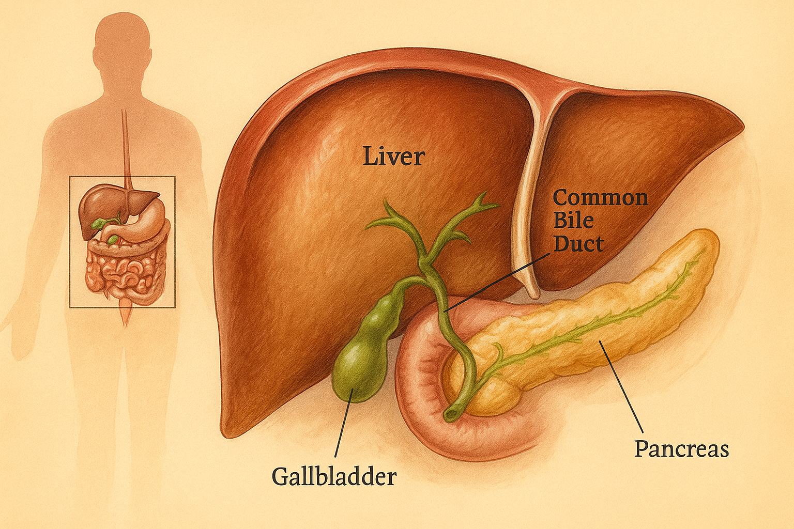
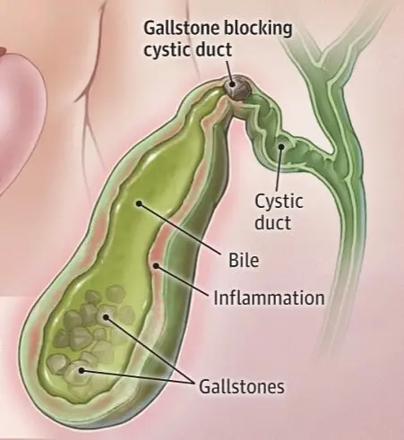
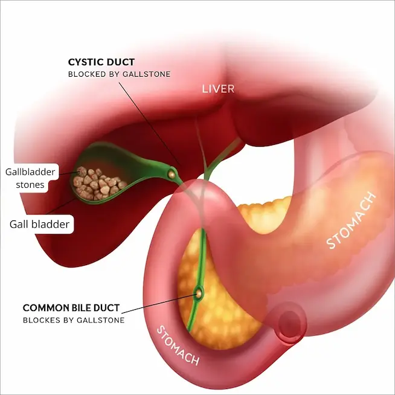
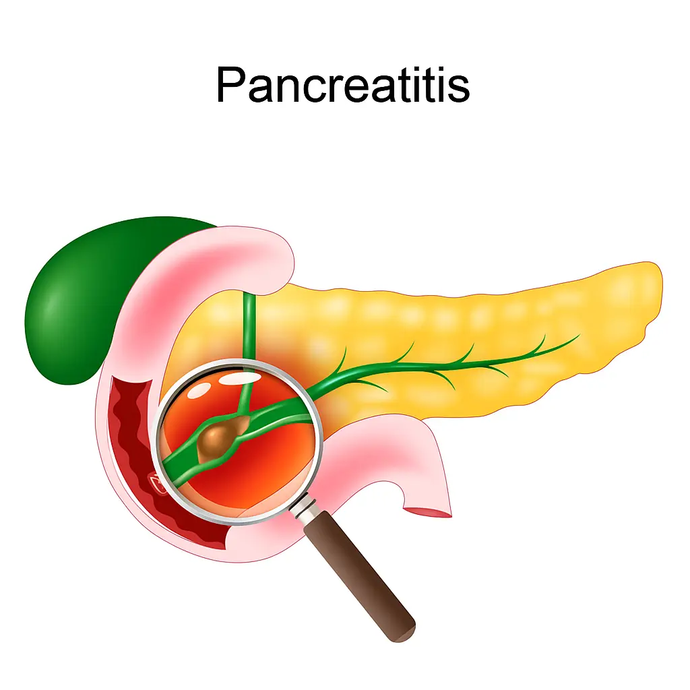
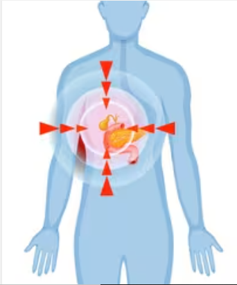
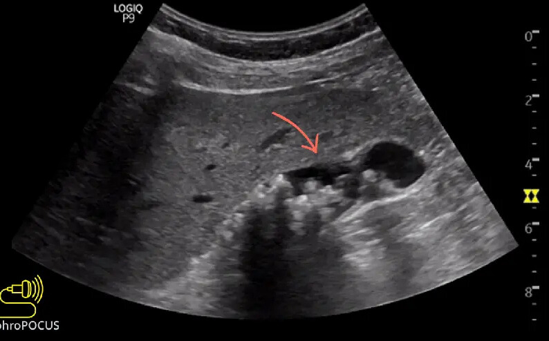
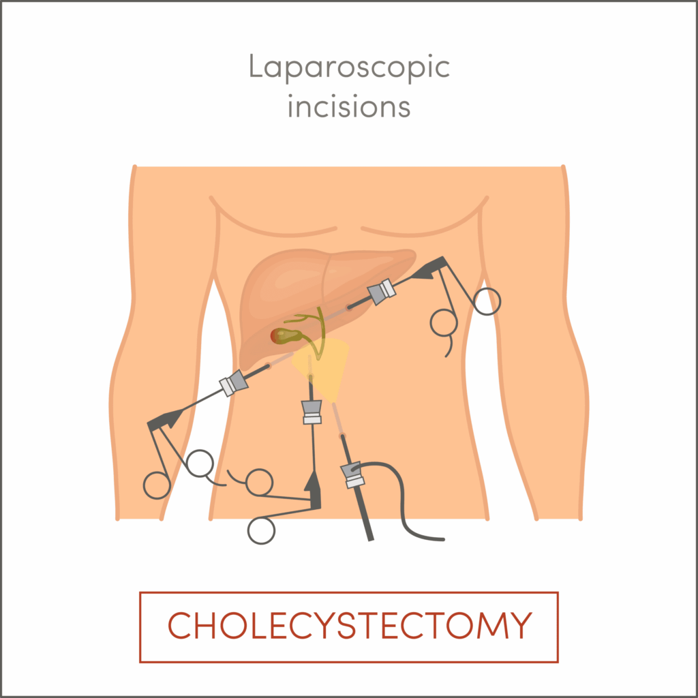
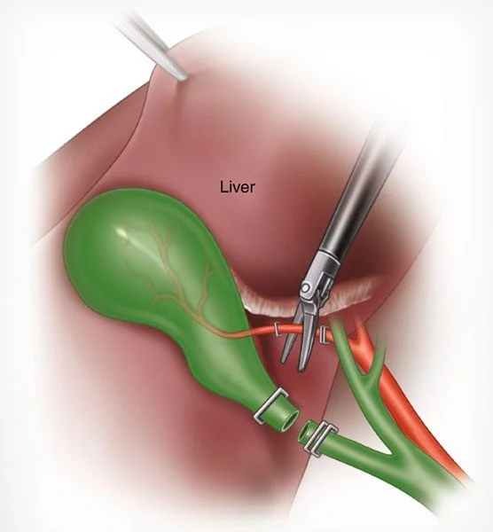
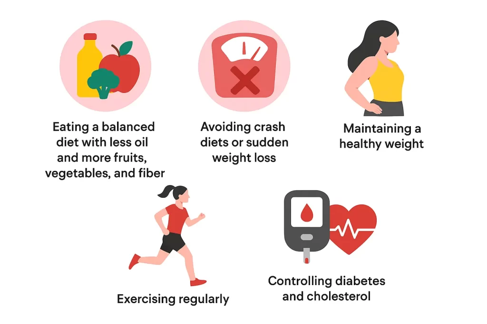

Think of your liver as a factory. This factory makes a special liquid called bile which helps digest (break down) fats in your food. Now, this bile needs a storage place.
What Is the Gallbladder?
Now, this bile needs a storage place. That storage place is the gallbladder — a small pouch sitting under the liver.
📦 The gallbladder is just like a storage tank. It doesn’t make bile, it only stores it. When you eat food, the gallbladder squeezes and sends bile into the intestine to help digest fats.
What Are Gallbladder Stones?
Sometimes, the bile stored inside the gallbladder becomes too thick or too rich in cholesterol. Slowly, it starts forming hard lumps — these are called gallstones.
These stones can be:
As small as sand
Or as big as a marble
Some people never know they have stones. Others may get pain and health problems because of them.
Why Do Gallstones Form?
Gallstones form when there is:
- Too much cholesterol in bile
- Too much bilirubin in bile
- Low bile salts
- Gallbladder not emptying fully
- Diabetes
- Liver disease (cirrhosis, hepatitis)
- Blood disorders (hemolytic anemia)
- Intestinal diseases (e.g., Crohn’s)
- Being female (estrogen increases cholesterol in bile)
- Pregnancy (hormonal changes slow gallbladder emptying)
- Oral contraceptives or hormone therapy
Imagine keeping milk in a pot without stirring. After some time, a cream layer forms. Similarly, bile sitting for too long in the gallbladder can form stones.
What Problems Can Gallstones Cause?
- Gallbladder inflammation (Acute cholecystitis): Sudden pain, fever, nausea, vomiting; can progress to infection.

- Bile duct blockage (Choledocholithiasis): Severe pain with jaundice and dark urine.

- Pancreatitis: If a stone blocks the pancreatic duct, it can cause dangerous inflammation of the pancreas.

- Gallstone attack & rare severe complications: Sudden, intense pain (often after fatty/oily meals). In very rare cases, stones can lead to life-threatening issues like gallbladder ruptur

Not everyone with gallstones has symptoms. Many people live with them unknowingly.
But when gallstones block the flow of bile, they can cause problems.
Most gallstones are harmless, but when they cause symptoms, medical attention is necessary.
Common symptoms
- Pain on the right side of the stomach (often after eating oily or fatty food)
- Pain moving to the back or right shoulder
- Nausea or vomiting
- Gas, bloating, indigestion
- Fever and chills if infection develops
- Yellow eyes and skin (jaundice) if stones block the bile pipe
This pain is sometimes called a gallbladder attack.
Who Gets Gallstones More Often?
- Women – hormones (estrogen, pregnancy, birth control pills) increase risk
- People over 40 – risk rises with age
- Overweight or obese individuals – higher cholesterol in bile
- Those with rapid weight loss – crash diets, bariatric surgery
- Family history – genetics play a role
- Certain ethnic groups – Native Americans, Hispanics more prone
- People with health conditions – diabetes, liver disease, blood disorders
- Sedentary lifestyle
- Individuals on total parenteral nutrition – IV feeding for long periods
How Do Doctors Find Gallstones?

Doctors usually do an ultrasound (a safe, simple test) to see stones.
Other tests may include:
- CT scan – to look for complications or other causes of pain
- MRI / MRCP (Magnetic Resonance Cholangiopancreatography) – special scan to see bile ducts and stones
- HIDA scan (hepatobiliary scan) – shows how well the gallbladder is working
- Endoscopic ultrasound (EUS) – combines endoscopy and ultrasound to find small stones
- ERCP (Endoscopic Retrograde Cholangiopancreatography) – used more for treatment, but can also detect stones in the bile duct
- Blood tests, such as:
- Liver function tests (bilirubin, ALT, AST, ALP, GGT)
- Pancreatic enzymes (amylase, lipase)
- Complete blood count (CBC) to check for infection
How Is Surgery Done?
- The best and safest surgery is called laparoscopic cholecystectomy.
- Done with 3–4 tiny cuts (keyhole surgery)
- Gallbladder is removed completely
- Patient usually goes home in 1–2 days
- Sometimes, in complicated cases, an open surgery may be needed.

Why the Gallbladder Is Removed Instead of Just the Stones?
When gallstones are detected, the standard treatment is removal of the entire gallbladder, not just the stones. This approach is based on several clinical reasons:
- Risk of recurrence: A gallbladder that has produced stones once is highly likely to form them again.
- Underlying dysfunction: The presence of stones indicates that the gallbladder is not functioning normally.
- No medical cure: Gallstones cannot be reliably dissolve or eliminated with medicines; surgical treatment is the only effective option.
- Potential complications: Simply removing stones can leave the gallbladder damaged and may lead to bile leakage or other complications.
For these reasons, surgical removal of the gallbladder (cholecystectomy) remains the definitive and permanent treatment to prevent further problems.

Can You Live Without a Gallbladder?
The answer is YES !!!
The liver, not the gallbladder, is responsible for producing bile. The gallbladder merely serves as a storage reservoir. After surgery, bile continues to flow directly from the liver into the intestine through the bile duct, ensuring that digestion is not interrupted.
In practical terms, the liver functions as the factory, the gallbladder as the storage tank, and the bile duct as the pipeline. Even if the storage tank is removed, the pipeline remains intact and bile continues to reach the intestine.
Most patients recover within a few weeks and return to normal digestion. A small proportion, around 5–10%, may experience temporary symptoms such as bloating, gas, or mild loose motions, which typically resolve with time.
How to Prevent Gallstones?

- You can reduce the risk by:
- – Eating a balanced diet with less oil and more fruits, vegetables, and fiber
- – Avoiding crash diets or sudden weight loss
- – Maintaining a healthy weight
- – Exercising regularly
- – Controlling diabetes and cholesterol
Key Takeaways
Gallstones are common, especially in India.
Not all gallstones need treatment — only when they cause problems.
If surgery is needed, removing the gallbladder is safe and the body adapts well.
You can live a completely normal, healthy life without a gallbladder.
Have a question this article does not answer?
Send us your reports. A specialist reviews them before you travel, so the first visit begins with a plan rather than a repeat test.